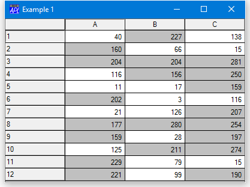
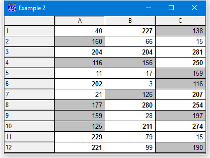
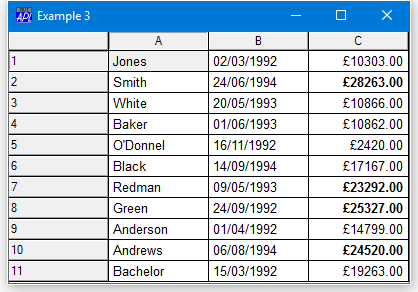

Specifying Individual Cell Attributes
The FCol, BCol, CellFonts and Input properties can be used to specify attributes of individual cells. One possible design would be for these properties to be matrices like the Values property, each of whose elements corresponded to a cell in the Grid. However, although conceptually simple, this design was considered to be wasteful in terms of workspace, especially as it is unlikely that every cell will require a totally individual set of attributes. Instead, FCol, BCol, CellFonts and Input either specify a single attribute to be applied to all cells, or they specify a vector of attributes which are indexed through the CellTypes property. This design is slightly more complex to use, but minimises the workspace needed to represent cell information.
CellTypes is an integer matrix of the same size as Values. Each number in CellTypes defines the type of the corresponding cell, where type means a particular set of cell attributes defined by the BCol, FCol, CellFonts and Input properties.
If an element of CellTypes is 0 or 1, the corresponding cell is displayed using the normal value of each of the FCol, BCol, CellFonts and Input properties. The normal value is either the value defined by its first element or, if the property has not been specified, its default value.
If an element of CellTypes is greater than 1, the corresponding element of each of the FCol, BCol, CellFonts and Input properties is used. However, if a particular property applies to all cells, you need only specify one value; there is no need to repeat it. This mechanism is perhaps best explained by using examples.
Example 1
Suppose that you want to use a Grid to display a numeric matrix DATA and you want to show elements whose value exceeds 150 with a grey background. Effectively, there are 2 different types of cell; normal white ones and dark grey ones. This can be achieved as follows:
DATA←?12 3⍴300
'F'⎕WC'Form' 'Example 1'
'F.G'⎕WC'Grid'DATA(0 0)F.Size
'F.G'⎕WS'CellTypes'(1+DATA>150)
'F.G'⎕WS'BCol'(192 192 192)(128 128 128)

CellTypes[] is either 1 or 2, according to whether the value in the corresponding cell is 150 or less. So the cells whose value is 150 or less use BCol[1] which is 255 255 255 (white) whereas those cells whose value is >150 use BCol[2] which is 192 192 192 (grey).
Example 2
Continuing on from the first example, suppose that in addition, you want to show values that exceed 200 with a white background, but using a bold font. Now you have 3 types of cell; white background with normal font, grey background with normal font, and white background with bold font. This can be done as follows:
CT←(DATA>200)+1+DATA>100
'F.G'⎕WS'CellTypes'CT
COL←(255 255 255)(192 192 192)(255 255 255)
'F.G'⎕WS'BCol'COL
'Normal'⎕WC'Font' 'Arial' 16
'Bold'⎕WC'Font' 'Arial' 16('Weight' 1000)
'F.G'⎕WS'CellFonts' 'Normal' 'Normal' 'Bold'
In this example, there are three different sets of attributes, selected according to where the value in CellTypes[] is 1, 2 or 3.
- Normal font + white background
(255 255 255) - Normal font + grey background
(192 192 192) - Bold font + white background
(255 255 255)
The value in CellTypes is given by the expression (DATA>200)+1+DATA>100, so cells whose value is:
- less than 100 use
CellFonts[1]andBCol[1] - between 100 and 200 use
CellFonts[2]andBCol[2] - between 100 and 200 use
CellFonts[3]andBCol[3]
Example 3
This is a more complex example that introduces different uses of the Input property to handle numeric and date cells. Suppose that you wish to display the names, date of birth, and salaries of some people. The user may edit the salary and date of birth, but not the name. Salaries in excess of $19,999 are to be shown in bold
This means that we need 4 types of cell; the "names" cells, the "date of birth" cells, the cells containing salaries below $20,000 and those cells containing $20,000 or more. The Input property must specify 3 different objects; a Label for the protected "names" cells, an Edit object for the "date" cells, and a different Edit object for the salaries. The CellFonts property must specify the two different fonts required; normal and bold.
'F'⎕WC'Form' 'Example 3'
'F.G'⎕WC'Grid'('Posn' 0 0)F.Size
'F.G'⎕WS'Values'(↑[0.5]NAMES BIRTHDATES SALARIES)
CT←1,2,[1.5]3+SALARIES>19999
'F.G'⎕WS'CellTypes'CT
'F.G.Name'⎕WC'Label'('FontObj' 'Normal')
'F.G.Date'⎕WC'Edit'('FieldType' 'Date')
'F.G.Sal'⎕WC'Edit'('FieldType' 'Currency')
INPUTS←'F.G.Name' 'F.G.Date',2⍴⊂'F.G.Sal'
'F.G'⎕WS'Input'INPUTS
'Normal'⎕WC'Font' 'Arial' 16
'Bold'⎕WC'Font' 'Arial' 16('Weight' 1000)
FONTS←(3⍴⊂'Normal'),⊂'Bold'
'F.G'⎕WS'CellFonts'FONTS